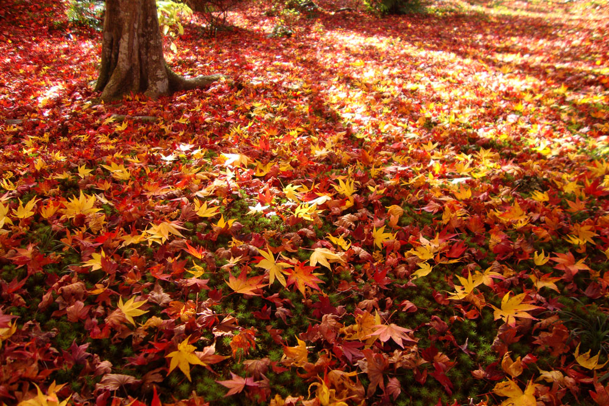
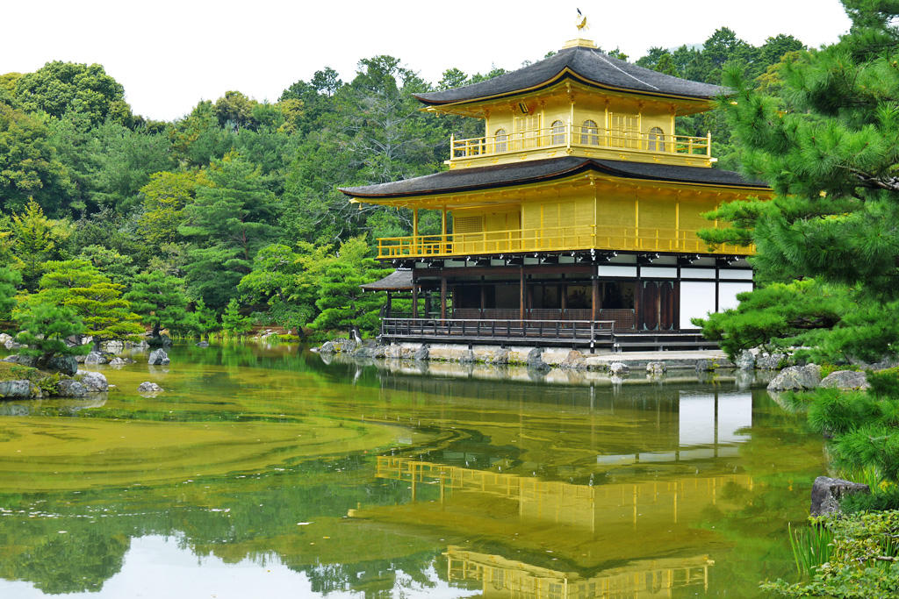
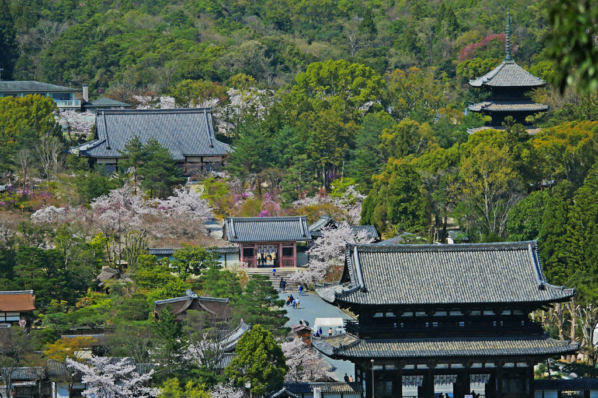
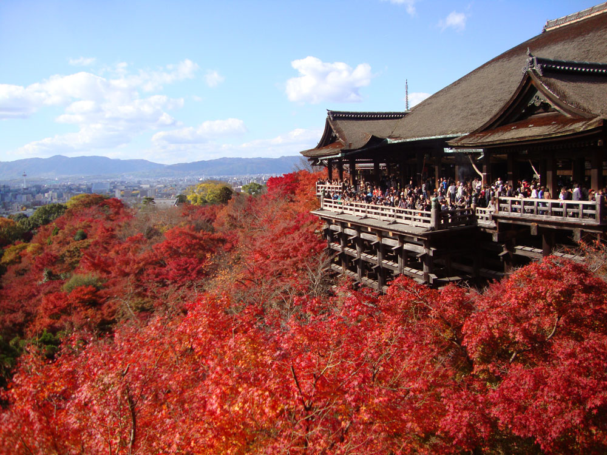
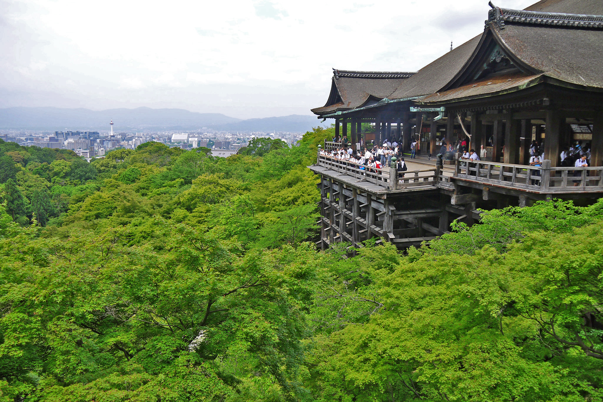
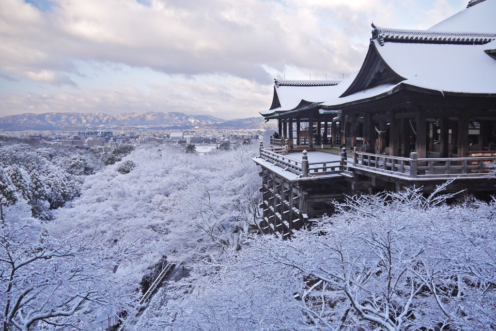
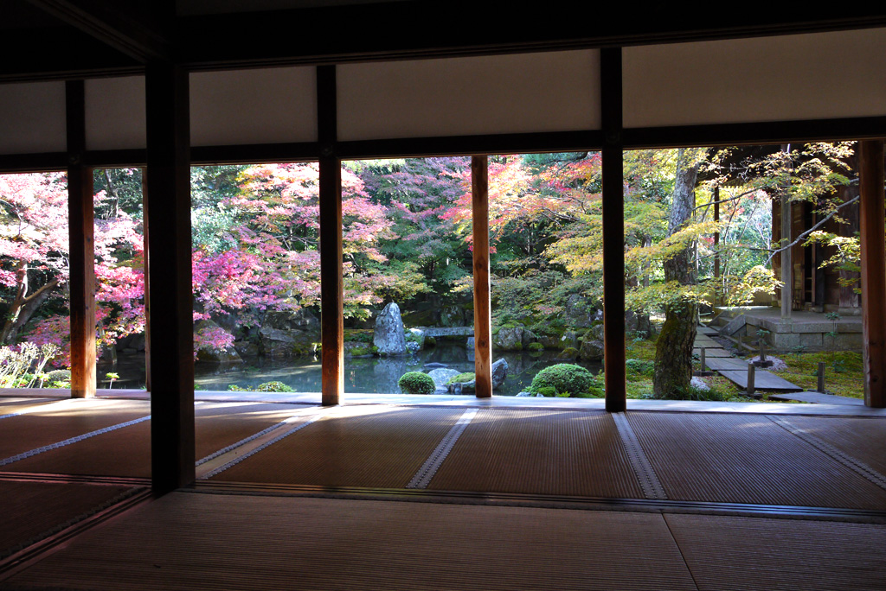
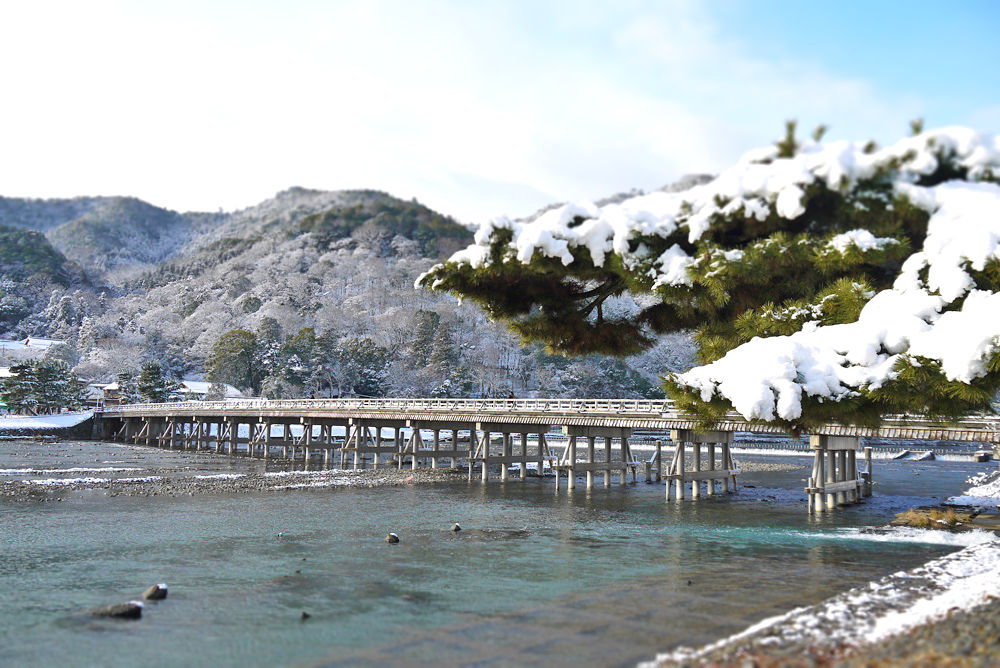

京都を満喫しよう！～京の都最適旅～
以下の手順を踏むことにより最適な巡回路を出力します。
このサイトによって、ご旅行のお力添えが出来れば幸いです。
1.最初に観光したい場所を選択してください。
2.1で選択した観光地以外で回りたい場所を選択してください。
3.選択した観光地の□チェックボックスにチェックを付けてください。
4.旅の開始時刻を設定してください。
5決定ボタンを押してください。
6.選択した観光地への最適な順路が表示されます。








京都フリー写真素材より
最初に行きたい場所を選択してください。